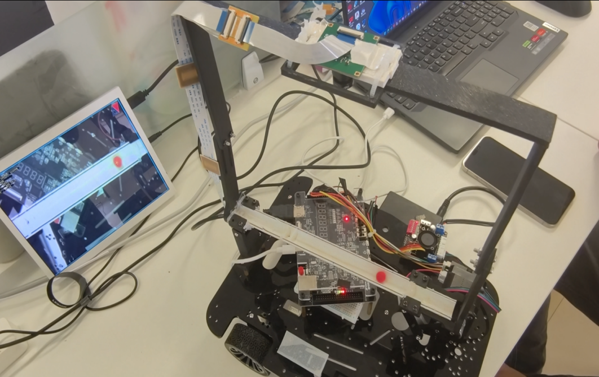
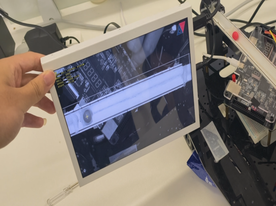
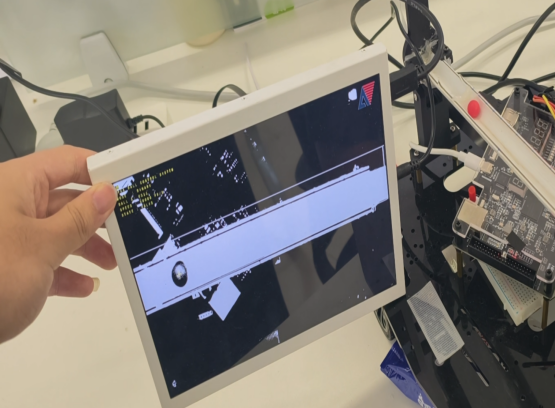
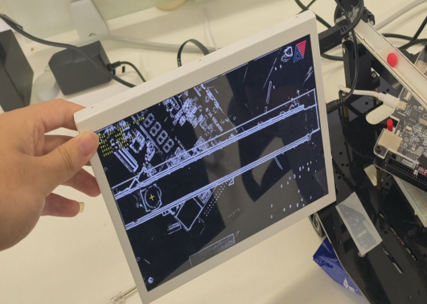
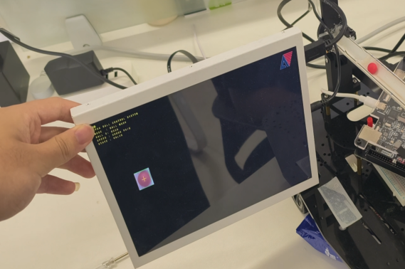
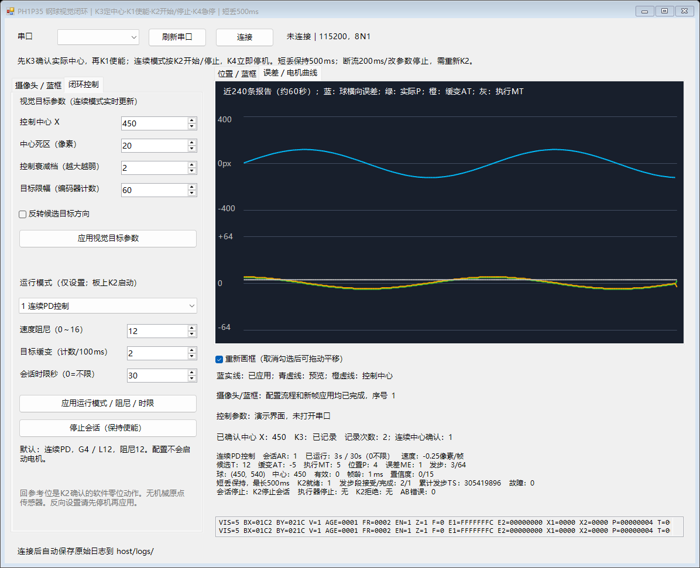

视觉识别
输出小球位置与外框，支持配置 ROI，让系统在指定范围内寻找目标。
从画面到坐标FPGA ENGINEERING PROJECT / 2026
FPGA 视觉球杆平衡闭环控制
把摄像头、小球、球杆和电机连接起来。
从识别位置到调整姿态，让控制过程清晰可见。

01 / THE IDEA
让 FPGA 同时承担视觉处理、控制执行和画面输出。
摄像头采集画面
定位小球与识别区域
结合位置与运动趋势
决定调整方向与强度
电机改变球杆姿态
编码器反馈执行状态
小球位置持续更新
反馈进入下一次调节
02 / WHAT WE BUILT
也让每一步判断、调整和观察都有明确的出口。
输出小球位置与外框，支持配置 ROI，让系统在指定范围内寻找目标。
从画面到坐标结合球位置、运动趋势和编码器反馈，采用分区调节与提前制动策略。
从位置到行动HDMI 展示图像与状态，上位机调整参数并记录遥测，方便观察和复盘。
从过程到理解03 / SEE THE PROJECT
原图、二值、边缘与目标显示。
多种视角呈现图像处理效果。




OBSERVE / CONFIGURE / REVIEW
通过上位机调整曝光、增益、识别区域和控制参数，查看遥测与日志，让硬件调试更直观。

04 / WALK THROUGH THE DEMO
从视觉识别到反馈调节，用四个步骤展示系统协同。
确认相机、识别区域和小球标记。
K1 使能，满足条件后 K3 记录参考。
K2 启停，观察球位置与机构动作。
观察遥测；K4 停止并切换显示。
ENGINEERING OUTCOMES
完整系统：视觉识别、单轴闭环、多模式显示与上位机调试协同运行，形成完整 FPGA 工程。
工程交付：23 项电机回归测试通过，完成 TD 布局布线与时序检查，配套源码、约束、仿真与上位机资料。
查看验证记录 ↗EXPLORE FURTHER